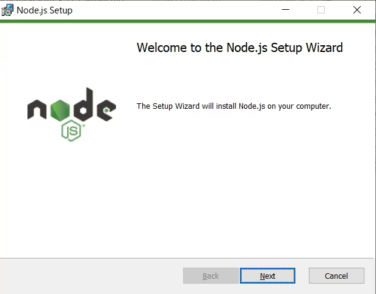

SPSS(Summer Program Study Session)2022は、初学者向けのプログラミング勉強会です。
10日間に渡り、さまざまなプログラミング技術に触れていきます。
目的
- プログラミングの最初の1歩を手助けする
- プログラミングの恐怖感をなくす
- PCと親しくなる
留意点
- 書いてある情報が必ず正しいとは限らない点
- 度々詳細を省略している点
- 実装を主としている点
私 (運営者)も皆様と一緒に成長します！
大変なこともありますが頑張りましょう！
Shellとは人がコンピュータに対して指令を出す窓口のようなものです。
例を挙げると、macはターミナル(広い意味で)、windowsはコマンドプロンプトです。
シェルには種類があり、windowsだと他にはPower Shell、macだとItem2(広い意味で)がある。
この資料ではmacやwindowsによってコマンドが異なる場合を除いて基本的にシェルと呼びますのでご理解ください。
※「ターミナル → bash等 → コンピュータ」の様な流れであるが、bash等を含めてターミナルと呼ぶことが多いので、「広い意味で」と記述しています。
大半の資料もですが、本資料でもコマンドを入力する際は以下の様に示します。
$ コマンドを入力する※以後シェルでの操作の場合は"$"をつけます。($をつけたまま入力しないこと)
Windows - コマンドプロンプト
起動方法
- 「ここに入力して検索」にcmdと入力
- コマンドプロンプトと出るのでクリック

mac - ターミナル
起動方法
- Command + Shift (スポットライト検索)
- 「ターミナル」と検索し起動
画像の例はItem2ですが、画面は基本的には変わりません。
(ちなみに私はfishと呼ばれるシェルを使い、カスタマイズしています)
GitHubは誰もが使っている、ソースコード管理サイトである。
GitHubを用いると、自分のソースコードを他人に共有することができる。
身近な例で言うと Youtubeだ。自分で撮影したビデオをYoutubeというプラットフォームに投稿することによって、他人に発信することができる。
GitHubも同様に、自分で作成したソースコードをGitHubというプラットフォームに投稿(push)することによって、他人に発信できる。
GitHubに投稿したり、GitHubに投稿されているソースコードをダウンロードするには後述するgitを用いる

GitHubのページからSign upをしてください。
※後ほど、GitHubに登録したemailとusernameを使うのでどこかにメモすること
GitHubの見方
例としてday5で用いる予定のJava_Python_Linbot_Starters_kitを見てみよう
GitHubにアクセスした際はおおよそ、以下のようなリポジトリのページです。
リポジトリ
ファイルや変更履歴を置く場所です。
リポジトリ名は
のJava_Python_Linbot_Starters_kit (タイポしていますが気にしないでください)がリポジトリ名と呼ばれます。ダウンロード(clone)した際のフォルダ名はこのリポジトリ名になります。
ソースコードやファイル
これを自分の環境にダウンロード(clone)することで他人のコードを動かすことができます。
他にも機能が沢山ありますが、割愛します。
Node.jsとは

Javascript実行環境です。
ブラウザでしか使えなかったjavascriptだが、Node.jsを用いるとOSの機能が使える。つまりJavascriptの拡張版です
例えばZoomやブラウザ版のDiscordもnode.jsを元に動いているらしいです。
node.jsを用いると、フロントエンドとサーバーサイドをjavascriptで書くことが可能になります。
サーバーサイドとは
Webサイトの裏側の処理、Webページに必要な情報をデータベースから持ってきたり、
Webページを生成するということを行います
フロントエンドとは
フロントエンドとはWebサイトの表側の処理を担当します。
「CSSが...」とか「ここはh1タグで...」や「動的なサイトにしよう」とかはフロントエンドです。
またフロントエンドではjavascriptがよく使われます。
といっても実際は標準のjavascriptで書くのではなくVue.jsとかのフレームワーク、Reactなどのライブラリを使ってフロントエンドを実装するのが大半だと思います、
勉強会後半ではnode.jsのNode Package Manager 通称 npmを用いたReact.jsの環境構築をします。
インストール
Windows
- node.js←をクリック、そしてLTS(長期サポート版)をダウンロード
- ダウンロードファイルを実行してインストーラー起動
基本的にNextを押すだけでよい



チェックを外してNextを押す。「色々とインストールしますがよいですか？」と聞いている。後に必要になったら個別でインストールすれば良い。
mac
windows版と同じ手順でインストールしても良いが、ここではhomebrewを用いた手順を解説する。
Homebrewインストール
- Homebrewをクリックする

クリックするとこのページに遷移されるそこで、
の右のアイコンをクリックしてコピーする。
- terminalを開いてペーストしてエンターキーでインストールされます
Nodebrewインストール
nodebrewを利用するとnodejsのバージョン管理が便利になります。
$ brew install nodebrewでインストールされます
$ vi ~/.bash_profilePathを通します
※bashの場合
$ export PATH=$HOME/.nodebrew/current/bin:$PATH※macOS X 10.15 Catalina以降のmacをお使いの方 (zshがデフォルトなので)
$ echo 'export PATH=$HOME/.nodebrew/current/bin:$PATH' >> ~/.zprofile
$ source ~/.zprofileターミナルを再起動してから
$ nodebrew install-binary stableで安定版(LTS)がインストールされます
node.jsがインストールされているか確認する
v〇〇~ と表示されることを確認する
$ node -v
v14.19.0(今後のため)npmとは
npmとはnode.jsのパッケージを管理するシステムです。
パッケージとは
モジュール(module)と呼ばれる、クラスや関数などのプログラムをまとめて機能するようにしたのがパッケージおよびライブラリと呼ばれる。
web開発でnpm hogehoge、みたいな具合でパッケージを追加していくと思われますので補足として書きました。
先のGithubはこのgitのサービスに過ぎない。簡単に言うとgitはソースコード管理コマンドである。
Windows
Windows10にGitをインストールを参考にしてください
プロセスは変わらないのでwin11の方も参考にしてください。
mac
先で挙げたHomebrewを用います。
$ brew install gitで完了です。
初期設定(win/mac共通)
$ git config --global user.name [GitHubに登録したユーザー名]
$ git config --global user.email [GitHubに登録したメールアドレス]最近でgithubへpushするときなどにアクセストークンが必要になりました。
アクセストークン(Https通信)でも良いんですが、毎回入力するのは億劫です。
そこでssh通信でGitGubと接続したいと思います。
SSHで認証(win/mac共通)
ssh認証をするために、公開鍵と秘密鍵を使います。
秘密鍵を自分で管理(誰にも見せない)
公開鍵をGithubに送ります。
鍵を入れるフォルダに移動
$ cd ~/.ssh※cd はディレクトリを移動するコマンド
もし「.sshというフォルダがないよ！」の様なエラーが発生した下記のコマンドの後に再び入力してください
$ mkdir ~/.ssh※mkdir はディレクトリを作成するコマンド
鍵を生成する
$ ssh-keygen -t rsa
Generating public/private rsa key pair.
Enter file in which to save the key (/Users/(username)/.ssh/id_rsa):id_git_rsa
Enter passphrase (empty for no passphrase):
Enter same passphrase again:コマンドを実行すると、3回入力求められますが、1回目の入力ではid_git_rsa と入力し、
残りの2回の入力は無視してEnterを押してください
これで.sshフォルダの中に
- id_git_rsa
- id_git_rsa.pub
が追加されます。
公開鍵をコピーする
生成された公開鍵をクリップボードにコピーします。
Windowsの方は
$ clip < ~/.ssh/id_git_rsa.pubmacの方は
$ pbcopy < ~/.ssh/id_git_rsa.pub 公開鍵をGitHubに登録する
https://github.com/settings/sshにアクセスし、
のNew SSH keyをクリックしてください。
Titleに任意のわかりやすい名前(今回はgithub_sshとしました)
keyに先ほどコピーした公開鍵の情報をペーストします。
ペーストしたらAdd SSH keyを押します。
接続テスト
$ ssh -T git@github.com
Hi (account名)! You've successfully authenticated, but GitHub does not provide shell access.- もしかしたら、コマンド実行時に別ウィンドウが立ち上がり、Githubにログインするように促されることもあります。その際はそのウィンドウからログインしてください。
- 「この接続を信頼しますか？」の様なメッセージが出たらY(yes)と入力する
ngrok(エングロック)は簡単に言うと、ローカルサーバーを公開できるツールです。
5日目のLinebot作成では、このngrokを用いて、Lineと自分のPCを接続(トンネリング)します。
まずはngrokにアクセスしてください。
Windows
今回はChocolateyと呼ばれるパッケージ管理ツールを導入していないので、
zip fileをダウンロードしよう
zip fileを解凍すると以下の通りになっています。
ngrok.exeを実行すると、
と新たにコマンドプロンプトが起動します。
ngrokを使う際は、このngrok.exeから開かれたコマンドプロンプト上でコマンドを入力してください
mac
homebrewを導入しているので、コマンド1つでinstallすることができます。
$ brew install ngrok/ngrok/ngrokngrokがインストールされているか確認する
$ ngrok -v
ngrok version 2.3.40versionが表示されたらinstall完了です。
Docker DesktopはDockerの環境及び、コマンドを提供してくれます。
Dockerとは
Dockerとはコンテナ型の仮想環境を作成・配布・実行するためのプラットフォームです。
参照: https://aws.amazon.com/jp/docker/
メリット
- Dockerfileと呼ばれるコード化されたファイル(環境構築手順書の様なもの)を共有するので、誰でも同じ環境が作れる。
- 環境を配布しやすい
- スクラップ&ビルドが簡単
- 動作が早い - その分メモリ等を消費します
Windows
windowsの方はここが鬼門である。
Docker Desktopを使える様にするためには次のステップを踏む
- wsl2をインストール
- Docker Desktopをインストール
- wsl2のインストールをWSL2のインストールと分かりやすく解説【Windows10/11】
- Docker Desktopのインストールを【Docker Desktop】Windowsにインストール（WSL2）
を参考にしてください
mac
macは非常に簡単に導入できる。
Docker Desktopにアクセス
使っているchipにあった方のボタンをクリック
- Intel製チップのmacなら「Mac with Intel Chip」
- Mac製チップのmacなら「Mac with Apple Chip」
dmgファイルを起動する
なんと、これだけでインストールできます！
Dockerがインストールされているか確認する
$ docker -v
Docker version 20.10.14, build a224086docker のversionが表示されていたら、Docker Desktopもとい、Dockerのインストール完了です。
使用上の注意点
Docker DesktopはPCの容量とメモリを著しく消費するため
容量制限などの初期設定を行うべきですが、個人差が大きく網羅できないため、省略します。
容量制限を行う例として以下の画像を貼付しましたが、ご自身のPCと相談しながら、設定してください。よくわからない場合は初期値より低めに設定するか、そもそも弄らないのが賢明です。
VSCodeはコードエディタやテキストエディタと呼ばれ、要するにプログラムを書いたり、html書いたりとか色々できるソフトウェアである。
VSCodeはユーザ数や記事が多く問題が発生してもすぐに解決でき、また扱いやすいため導入する。
VSCodeをクリック
自分の使っているOSにあったものをダウンロードする
とりあえず、この選択肢から選択すれば間違い無いです。
ダウンロードされたファイルを起動し、インストールする
基本的には「next」を押すだけなので、省略します。
起動してみよう
起動できましたか？左のタブの数が異なると思いますが、問題ないので気にしないでください。
拡張機能を追加しよう
VSCodeの特徴として、拡張機能によるカスタマイズ性の高さが挙げられる。
拡張機能を追加することによって、自分だけのテキストエディタを作ることができる。
拡張機能は左のタブの四角のアイコンから追加することができる。
をクリックし、
「Search Extensions in M...」から拡張機能を検索する。
をクリックして、拡張機能を追加する。
Japanese Language Pack for Visual Studio Code
※英語耐性がある方は必要なし
検索欄「japanese」と検索、一番上のものをクリックする。
追加するとVSCodeのリロードが要求されるので、リロードする。
リロードすると、UIに日本語が含まれていることが確認できる。
Python
コード補完やデバッグ等、VSCodeでPythonを書くなら、必須級な拡張機能
検索欄「Python」と検索
Extension Pack for Java
これも先述のPythonの拡張機能同様な機能がある。必須級な拡張機能である。
検索欄「Java」と検索
JavaScript (ES6) code snippets
JavaScirptのコード補完をしてくれる。
検索欄「JavaScript」と検索
Docker
コンテナ化されたアプリケーションの構築、管理、デプロイが簡単にできるようになる。
検索欄「Docker」と検索
Auto Rename Tag
HTMLなどで、<a>と入力すると、勝手に</a>と補完してくれる優れもの
検索欄「Auto Rename」と検索
他にもおすすめな拡張機能はありますが、際限がないので割愛します。
各自検索し、自分好みの拡張機能を導入してみてはいかがだろうか？
これからはPythonとJavaの環境構築を行い、Hello Worldをさせるとこまで進む。
それに伴い、VSCodeでフォルダを開いておこう。
左のタブのファイルアイコンをクリック
クリックすると、「Open Folder」もしくは「フォルダを開く」となっているので、クリック
フォルダを作成 -> 開く
画像はmacの例だが、windowsの場合は任意の場所で右クリック -> 新規 -> フォルダ作成からフォルダを作成できる。
フォルダ名をSPSS2022にする
このような画面になっていることを確認する。
Hello.pyとHello.javaを作成する
画面右上のSPSS2022の近くにカーソルを近づけると、ファイル+アイコンが表示しているのでクリックする
Hello.javaと入力
Hello.pyと入力
2つのファイルが作成されたことを確認する
Hello.pyを開く
Hello.pyを開いて以下の様に記述する
SPSS2022/Hello.py
print("Hello World!")Hello.javaを開く
Hello.javaを開いて以下の様に記述する
SPSS2022/Hello.java
public class Hello{
public static void main(String[] args) {
System.out.println("Hello World!");
}
}次から環境構築を行い、これらのコードを実行できる様にする。
Dockerを用いた環境構築も考えたが、リソース過多になりやすいため、ローカル環境にPython環境を構築する。ローカル環境上に環境構築するのも良い経験になる。
また本勉強会では、外部ライブラリを用いた実装する際は、google colabまたはDocker を用いて環境構成するので、インストールして構わない。
あくまでも、この環境構築ではprint文を実行するのみである。
非公式Pythonダウンロードリンクにアクセスする。
これらは全て安定版なので、任意のバージョンのpythonをインストールしよう。
windows
今回は安定版で最新のバージョン3.10.6をインストールする。
「python-3.10.6-amd64.exe」をクリックしてインストーラをダウンロードし、インストールする。
「Add Python 3.10 to PATH」に必ずチェックをつける。
Install Nowをクリックするとインストールされます。
インストールが完了したらコマンドプロンプトを起動する
$ python --version
Python 3.10.6※python –versionでうまく動かない場合はpython3 –versionと入力してください
mac
windowsと同様にして安定版で最新のバージョン3.10.6をインストールする。
「python-3.10.6-macos11.pkg」をクリックしてインストーラをダウンロードし、インストールする。(OKを押すだけなので省略)
インストールが完了したらターミナルを起動する
$ python3 --version
Python 3.10.6※python3 –versionでうまく動かない場合はpython –versionと入力してください
バージョンが表示されたら環境構築はOK
hello.pyを実行しよう
VSCodeに戻って、Shift + Ctrl + @ でVSCode上でシェルを起動しよう

起動したら以下のコマンドを実行しよう
$ python3 Hello.py もしくは python Hello.py
Hello World!Hello Worldと表示されたらOK
Pythonと同様にして、ローカル環境にJava環境を構築する。
olacleにアクセス
java17を選択し、使用しているOSにあったインストーラーをダウンロードする。
windowsの場合
x64 installerをダウンロードし、そのインストーラーの指示に従ってそのままの設定で次に進んでインストールします。
macの場合
Arm 64はmac製のチップ
x64はIntel製のチップ
のinstallerをダウンロードする
VSCodeにパスを通す
インストールができたらパスを通します。
VSCode左下の歯車マークをクリック -> 設定(settings)をクリック
「Search settings」にjava:homeと入力
Edit in settings.jsonをクリックしてください
これの
"java.home": ""を以下の様に入力する
windows
"java.home": "C:\\Program Files\\Java\\{JDKのバージョン}"今回、JDKのバージョンは17.0.4なので
"java.home": "C:\\Program Files\\Java\\jdk-17.0.4"と入力する
mac
"java.home": "/Library/Java/JavaVirtualMachines/{JDKバージョン}/Contents/Home"今回、JDKのバージョンは17.0.4なので
"java.home": "/Library/Java/JavaVirtualMachines/jdk-17.0.4/Contents/Home"と入力する
hello.javaを実行しよう
VSCodeに戻って、Shift + Ctrl + @ でVSCode上でシェルを起動しよう
起動したら以下のコマンドを実行しよう
$ java Hello.java
Hello World!Hello Worldと表示されたらOK
たくさんありますが、今回は使いそうなコマンドのみをピックアップしました。
コマンドプロンプト(windows) | ターミナル(mac) | 用途 |
cd [path] | cd [path] | ディレクトリを移動する |
dir | ls | ディレクトリ内にあるファイルやフォルダを表示 |
cd ../ | cd ../ | 1つ後ろのディレクトリに移動する |
type [path/file] | cat [path/file] | ファイルの中身を確認 |
cd | cd | ホームディレクトリに移動 |
- git add
- git commit
- git push
- git pull
この4つのコマンドは頻繁に使うので覚えましょう。
無理に全て覚える必要はないです。全て覚えることにメリットはあまりないです。
コマンド | 用途 |
git init | ローカルリポジトリ作成 |
git clone [url] | リモート(GitHub)のリポジトリをダウンロード |
git status | staged / modified / untracked の一覧 |
git add [file/path] | 指定のファイルをstagedにする |
git add . | カレントディレクトリの全てのファイルをstagedにする |
git commit -m "[comment]" | コミットする |
git checkout -b [branchname] | ブランチ作成&チェックアウト |
git branch | ローカルブランチ一覧 |
git pull | リモートブランチの変更をローカルブランチに反映させる |
git push | 現在のブランチの変更をリモートブランチに反映させる |
git rm –cached -r [path] | ディレクトリを監視対象から外す |
git stash | modifiedとstagedを保存、HEADの状態までクリーンに戻す |
Githubで新規リポジトリを作成し、ShellからPushしよう
https://github.com/にアクセス
ボタン「New」を押す
リポジトリを作成する
Repository nameに「SPSS2022」とだけ書き、ボタン「Create repository」を押す
リポジトリが作成されていることを確認しよう。
また、...or push an existing repository from the command lineに書かれている
$ git remote add https://github.com/ユーザ名/SPSS.git
$ git branch -M main
$ git push -u origin mainこれらのコマンドは後ほど使います。
VSCodeからpushする
現時点ではVSCodeは以下のようになっています。
Shift + Ctrl + @ でVSCode上でシェルを起動させる
シェルが起動したら、以下のコードを入力する。(ユーザ名の部分が異なるので打ち間違わないためにも、必ず手打ちで)
$ git init
$ git remote add origin https://github.com/ユーザ名/SPSS2022.git
$ git branch -M main
$ git add .
$ git commit -m "init"
$ git push -u origin main1,4,5行目以外は先のGitHubリポジトリに記載されている内容です。
GitHubにHello.javaとHello.pyがあるのを確認したら完了！
お疲れ様でした。
環境構築がプログラミングの鬼門になっているのでここを突破できたのは、大変すばらしいことです。
day2はPythonを使います。比較的易しめにします。
頑張りましょう！
本資料に度々でた「PATH(パス)を通す」とは何だろうか。
結論から言うと特定のプログラムをファイル名だけで実行できるようにすることである。
例えばWindowsでのPythonインストール時にPATHを通すようにしたのは、「python3」もしくは「python」と入力するだけでpythonを使えるようにするためだったのである。
windows - ngrokのPATHを通す
資料中は「ngrok.exeから開かれたコマンドプロンプト上でコマンドを入力してください」と示したが、実はPATHを通すことで、いつも通りに開いたコマンドプロンプト上からngrokを使うことができる。
ngrok.exeが入ったフォルダを移動させる。
現在ngrok.exeが入ったフォルダ「ngrok-v3-stable-windows-amd64」はダウンロードフォルダにあるだろう。
それをLocalDisc(C:)/Program Files/ に移動させる。
ngrok.exeにカーソルを合わせて右クリック -> プロパティ(R)をクリック
ここで注目するのは「場所:」である。
「C:\Program Files\ngrok-v3-stable-windows-amd64」をコピーする。
PATHを通す
「ここに入力して検索」から「環境変数」と検索する。
「システム環境変数の編集」をクリック
「環境変数(N)...」をクリックする
システム環境変数(S)の中の「Path」をクリックし、右下の「編集(I)」をクリックする。
新規(N)をクリックすると入力欄がでてくるので、先ほどの「場所：」の部分をペーストする。
あとは、「OK」を押してシステム環境変数の設定ウィンドウを消そう。
確認する
新しくコマンドプロンプトを起動して
$ ngrok --version
ngrok version 3.0.6と表示されたらPATHが通っている。